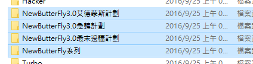
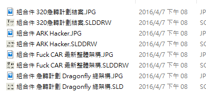
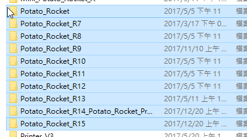
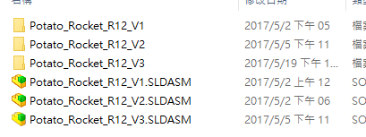

Onshape官方網站暨登入介面：https://www.onshape.com/
電腦輔助設計實習課程教材：http://mde.tw/cadp2018/content/
01_先來談談繪圖軟體和專案經驗：
在進入電腦輔助繪圖的技術領域，相信大部分的同學們是從訪間一些大眾行的繪圖軟體切入，如 Dassault 系列的 Catia、Solidworks 或是 Autodesk 系列的 AutoCAD 也有 PTC creo、Pro E. 等等。透過反覆不斷的操作及練習，讓外人稱羨的"技術"也就是熟能生巧的"快速建模"，隨著對數學、數值運算運用的深度，建模的時間以及技巧也就越趨精簡甚至接近藝術。
僅是獨立做也建立單體零件不打緊，個人執行零件繪製時，因為建模者本身對自行繪圖邏輯、次序認知清楚，遂若零件若未逐漸巨大化、複雜化，很少有機會必須明確交代各個階段的繪製目的、特徵安排、屬性切換等等有關版本序列判讀的重要因素。沒錯！版本序列名詞出來了，本人對這有深刻的經驗，這也是今天為甚麼要介紹Onshape的重點。
從高工、綜高畢業後，到了科大進行的建模絕對不會像過去可能是檢定題目或是實體物件進行實物測繪。逐漸的會趨近或大或小的"合作"去完成專案、專題，小至兩個人大至有機會可能會跟有產學合作的校外廠商。這時候僅是做單體零件進行編輯即需要清楚且明確的繪製目的、特徵安排標註。若沒有完善的專案管理進入大型組立時將會發生系統性的災難！

《版本狀態標示凌亂，無法辨識次序以及現階段進度》

《檔案散亂，名稱標示不完整己乎玲協作空間，也容易讓建立者本身混淆》
凌亂的版本 + 多人協作 = 大災難
在 Solidworks 內部有相關的模組可以幫助繪圖者、設計者進行專案管理，"SOLIDWORKS Workgroup PDM"但是並非所有購買相關軟體的教育單位都會加掛類似的模組。我本身在接觸這項模組時，選擇了徒法煉鋼的方法進行視覺直觀上的辨識，這名字乍聽起來很酷，當知道我是利用"隨身攜帶"的功能，並且在每一階段檔案的尾標加上版本序列編號時，就會知道其實一點都不酷。儘管可以留下個別獨立版本的檔案在專案資料夾裡，但是當改版的多、修正的複雜時資料夾就會非常的笨重，而且若"Family_tree"出現錯誤，很容易牽一髮動全身造成該組立旗下的版本資料必須全部進行重新抓取，屆時即是大災難的開始。

《完整的版本序列，在各大型組立關係變更後由 "R" 進行管理》

《在 "R" 編號底下將會有細部調整的 "V" 編號》
這種模式進行管理，若 Family_tree 沒有出錯會留下完整的專案紀錄，但是會因為所有專案雖然是版本關係，各個版本卻是獨立檔案，雖然在個別移動上不會影響同意層級含以上的版本，資料夾卻會非常龐大。
Python_area << Previous Next >> Week_01_Homework